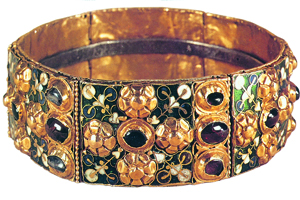
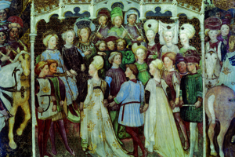
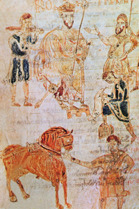

Lezione 5  Invasioni barbariche
Invasioni barbariche

-
30
410
-
100
360
-
70
390
-
110
400
-
100
330
ITALIA
568: sotto la guida del re Alboino i longobardi invadono l’Italia.PAVIA
572: Pavia cade sotto i longobardi dopo un assedio di tre anni e viene scelta come residenza dei re.
MONZA
Secondo la tradizione questa corona in oro, argento e pietre preziose fu forgiata a partire da un chiodo della croce di Cristo (di qui il nome di “Corona di ferro”); per molto tempo dunque fu insieme simbolo del potere regale e reliquia. In realtà l’aspetto attuale del manufatto, custodito nel tesoro del duomo di Monza, è il frutto di numerosi interventi avvenuti tra il V e il IX secolo.
ZAVATTARI
La corte del re Autari e della regina Teodolinda diviene, negli affreschi della famiglia Zavattari, pittori lombardi della metà del Quattrocento, occasione per una raffigurazione fantastica e cortese dell’età longobarda.
ROTARI
Al re Rotari, qui raffigurato in una miniatura dell’XI secolo, si deve l’editto promulgato alla mezzanotte del 22 novembre 643, che costituisce la prima raccolta di leggi del diritto longobardo.